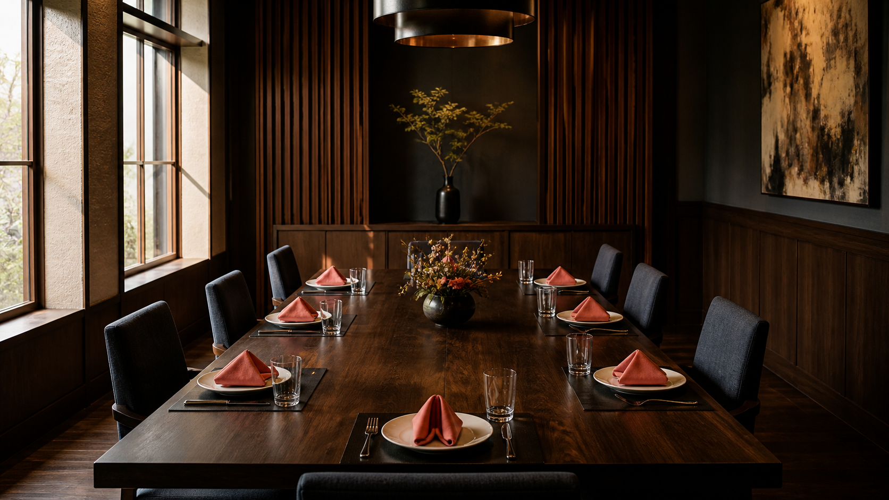

송년회 단체 예약은 '송년회'로 검색되지 않습니다 — 지역 검색 네 조합
단체 예약 문의는 상황 키워드가 아니라 지역·인원·공간·조건 조합으로 들어옵니다. 12월 예약이 몰리는 시점과 올해 달라진 규모, 페이지에 먼저 적어야 할 네 줄을 정리했습니다.

단체 예약 문의는 '송년회'라는 단어로 들어오지 않습니다. 손님은 "수원 20명 룸", "용인 단체석 주차"처럼 지역과 인원, 조건을 붙여 검색합니다. 그래서 이번 달에 늘려야 하는 것은 글의 개수가 아니라 우리 가게 화면에 적힌 네 칸이고, 그 칸이 비어 있으면 12월 목록에서 먼저 빠집니다.
작년 12월에 상담한 가게는 예약 전화가 끊이지 않았습니다. 문제는 바로 옆 가게였습니다. 같은 골목, 비슷한 평수, 음식도 나쁘지 않은데 12월 둘째 주가 통째로 비어 있었습니다. 이유는 단순했습니다. 손님이 '20명'을 붙여 검색했을 때 나오는 화면에 수용 인원이 없었습니다. 손님이 전화를 걸려면 먼저 우리 가게를 찾아야 하는데, 찾는 단계에서 빠지면 응대 실력은 쓰일 기회조차 없습니다.
12월 예약은 어디로 몰리나 — 확인된 세 가지#
- 시기. 한국외식업중앙회 설명으로는 외식 예약이 12월 둘째 주부터 넷째 주까지 금요일과 토요일 저녁에 집중됩니다. 단체석을 갖춘 한식당과 코스 요리를 내는 레스토랑은 12월 초순이면 예약 문의가 평소의 두 배 이상으로 늘어난다고 합니다(소상공인미디어, 2026년 11월 19일).
- 규모. 올해 눈에 띄는 변화는 크기가 아니라 '중간 크기'입니다. 대형 연회장 대신 20명 안팎이 들어가는 중소형 룸을 찾는 기업 단체가 늘었습니다(같은 기사).
- 시간대. 인크루트가 2025년 12월 직장인 회원 888명에게 물은 조사에서 20대 36%, 30대 37.7%가 근무시간 중 송년회를 선호했습니다(한국경제, 2026년 11월 10일). 퇴근 후 술자리 대신 점심으로 끝내는 쪽이 늘었다는 뜻입니다.
세 가지를 겹쳐 보면 지도가 하나 나옵니다. 금요일 저녁은 경쟁이 가장 센 자리이고, 목요일 저녁과 평일 점심은 상대적으로 덜 붐빕니다. 그런데 대부분의 가게 화면에는 금요일 저녁 정보만 있습니다. 영업시간, 점심 단체 가능 여부, 룸과 홀 구분이 없으면 손님은 비교를 못 하고, 비교를 못 하면 문의하지 않습니다.
예약자는 네 조합으로 검색합니다#
- 지역 + 인원. "수원 20명 단체", "용인 10명 룸". 손님은 인원을 먼저 정하고 지역을 좁힙니다. 페이지에 최소·최대 인원이 숫자로 없으면 이 검색에서 빠집니다.
- 지역 + 공간. "룸 있는 식당", "단독홀", "조용한 방". 룸과 홀을 같은 말로 섞어 쓰면 손님은 어느 쪽인지 알 수 없습니다.
- 조건. "보증인원 없는 곳", "콜키지 가능", "주차 되는 단체". 12명이 넘으면 보증 인원과 최소 주문 금액을 거는 곳이 많아, 조건부터 확인하는 손님이 늘었습니다.
- 상황. "송년회", "연말 모임", "점심 회식". 가장 늦게 붙고, 가장 많이 붙는 단어입니다.
순서가 중요합니다. 상황 키워드는 경쟁이 가장 세고, 조건 키워드는 상대적으로 한산합니다. 그런데 사장님은 상황 키워드부터 씁니다. "송년회 예약 받습니다" 한 줄을 고민하는 시간에 "20명 단체 가능, 주차 8대, 콜키지 1병"을 적는 편이 문의를 더 만듭니다. 전화가 오는 순서는 늘 그렇습니다. 조건을 확인한 손님이 먼저 겁니다.
화면에 먼저 적어야 하는 네 줄#

- 수용 인원. 최소 몇 명부터 받는지, 최대 몇 명까지 한자리에서 가능한지 숫자로 적습니다. "단체 환영"만으로는 아무것도 알 수 없습니다.
- 보증 인원과 최소 주문. 12명 이상 단체는 보증 인원과 최소 주문 금액을 거는 곳이 흔합니다. 실제로 덜 왔을 때 어떻게 계산하는지도 같은 줄에 적습니다. 이 한 줄이 당일 계산대 분쟁을 줄입니다.
- 예약금과 취소 기한. 한국소비자원은 예약금 환불 규정이 업체마다 달라 분쟁이 반복된다며, 예약하는 쪽에 계약 전 환불 조건을 문자나 서면으로 받아 두라고 권했습니다(소상공인미디어, 2026년 11월 19일). 가게도 같은 기준을 먼저 적어 두면 통화가 절반으로 줄어듭니다.
- 주차와 이동. 몇 대까지, 몇 시간까지, 대중교통으로 오는 손님은 어디서 내리는지. 차로 오는 손님이 많은 경기 남부에서는 이 줄이 결정적입니다.
전화와 온라인을 나눠 쓰는 가게의 함정#
일부 매장은 예약 플랫폼에 몇 자리만 열어 두고 단체석은 전화로만 받습니다. 매장 입장에서는 합리적인 선택입니다. 단체는 메뉴와 좌석 배치를 미리 정해야 하니까요. 그런데 손님 화면에서는 그 시간이 '예약 마감'으로 보입니다. 받을 수 있는 예약을 받을 수 없는 가게로 보이는 셈입니다.
정리하는 방법은 어렵지 않습니다. 플랫폼 재고와 전화 재고를 같은 날 한 번 맞추고, 업체 소개란에 "단체·룸 예약은 전화로" 한 줄을 넣습니다. 이 한 줄이 없으면 검색에서 이긴 손님도 다음 화면에서 돌아섭니다. 예약 화면에서 손님이 멈추는 지점은 플레이스 예약 다섯 구간에 따로 정리해 두었습니다.
이 방식이 통하지 않는 경우#
- 업종. 객석이 여섯 개인 카페나 1인 운영 매장은 단체 예약 자체가 손해일 수 있습니다. 이때는 조건을 채우는 대신 "단체 예약은 받지 않습니다"를 분명히 적는 편이 낫습니다. 헛걸음하는 손님과 통화 시간이 함께 줄어듭니다.
- 지역. 역세권과 외곽은 검색하는 시점이 다릅니다. 외곽은 주차와 이동 시간이 먼저 걸리고, 역세권은 도보 거리와 막차가 먼저 걸립니다. 같은 문장을 두 지역에 그대로 쓰면 둘 다에서 어긋납니다.
- 데이터. 단체 예약 검색량은 지역별로 공개된 자료가 없습니다. 위 수치는 외식업중앙회의 업계 설명과 인크루트 조사, 기사에 담긴 인터뷰를 근거로 한 것이지, 우리 동네의 예약 건수를 뜻하지 않습니다.
자주 묻는 질문#
단체 예약도 온라인 예약에 올리는 게 좋나요?#
올려 두는 편이 낫습니다. 다만 단체는 인원과 메뉴 확정이 필요하므로, 플랫폼에는 소수만 열고 나머지는 전화로 받는 방식이 흔합니다. 어느 쪽이든 업체 소개란에 그 사실을 적어 두세요. 손님이 마감으로 오해하는 것이 가장 큰 손실입니다.
보증 인원은 몇 명부터 걸어야 하나요?#
정해진 기준은 없고, 업계에서는 12명 이상 단체부터 거는 경우가 흔합니다. 기준을 정했다면 페이지와 예약 문자에 같은 숫자로 적으세요. 전화에서 다르게 안내하면 그 한 통이 리뷰로 남습니다.
12월 초에 고쳐도 늦지 않았나요?#
금요일 저녁 인기 시간대는 이미 찼을 수 있습니다. 다만 목요일 저녁과 평일 점심, 1월 초 모임은 아직 남아 있습니다. 남은 자리를 조건 키워드로 채우는 편이, 찬 자리를 붙잡는 것보다 현실적입니다.
리뷰가 적은데 단체 예약을 받아도 되나요?#
받아도 됩니다. 다만 단체 손님은 리뷰를 여러 개 남기는 대신, 실패했을 때도 여러 사람에게 말합니다. 첫 단체 예약은 규모를 조금 줄여 받고, 응대 순서를 미리 정해 두는 편이 안전합니다.
마무리: 오늘 고칠 네 줄#
12월은 특별한 달이 아니라, 평소 정보가 부족했던 것이 드러나는 달입니다. 오늘 플레이스와 예약 화면을 열어 네 줄만 확인해 보세요. 인원, 룸과 홀 구분, 보증 인원과 예약금, 주차. 이 네 줄이 채워지면 남은 일은 응대입니다.
지금 운영 중인 플레이스와 예약 화면을 보내주시면, 손님이 어느 조합에서 우리 가게를 놓치는지 정리해 드립니다. 카카오톡 채널 (새 탭에서 열림)로 연락 주셔도 됩니다. 지역 키워드를 동네 단위로 내리는 순서는 수원 생활권 검색 설계에 이어서 정리해 두었습니다.
KEEP READING
이어서 읽기
같은 흐름에서 이어지는 글입니다. 지금 매장에 해당하는 지점부터 읽으시면 됩니다.

네이버 플레이스 예약이 늘지 않을 때 확인할 다섯 구간
조회 수가 늘었다면 관심은 이미 생겼습니다. 목록 선택, 첫 화면의 조건, 버튼 구성, 응답, 재방문까지 다섯 구간에서 손님이 멈추는 지점과, 플레이스 통계·스마트콜·예약 검수·Npay 수수료를 확인하는 순서를 정리했습니다.

수원 지역 마케팅, 생활권 네 곳마다 검색어를 바꿔야 하는 이유
수원은 인구 118만 명, 행정동 44개의 도시입니다. 인계동·행궁동·대학가·광교에서 손님이 검색하는 시점과 단어가 어떻게 다른지, 시 단위 키워드를 동네 단위로 내리는 순서와 유동인구 숫자의 한계까지 정리했습니다.